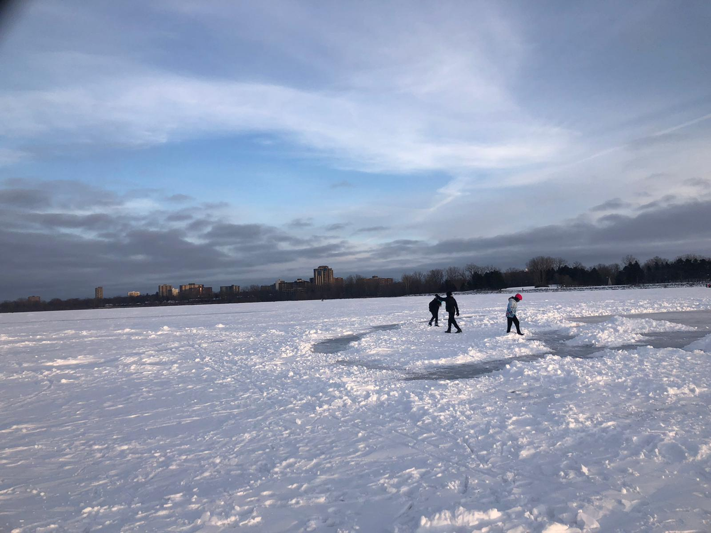

Inspiration

There are many places to draw inspiration from. Nature and motion has inspired the greatest visual and musical artist into creating masterpieces. Family and relationships also draw from that inspiration and motivation. Learn to choose and discern what can give you positive inspiration to propel you forward.